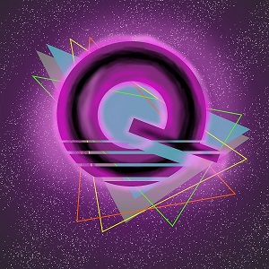

Where to Find Me

Here are all the links to my social medias.
You can find me on instagram where I try to post my paintings as soon as I finish them. Sometimes I'll stream my painting process on Twitch.tv, Facebook, or Youtube. Streaming is probably my favorite way to share my art. It gives people the opportunity to ask questions and see how the job gets done. This probably doesn't come as a surprise, but Bob Ross was my inspiration for all this. The way he made people feel welcome, and made sure we all knew that we all have what it takes to make beautiful artwork. I've sort of drifted away from that style, to try and find my own way of doing things, but it's always helpful to remember where you came from.